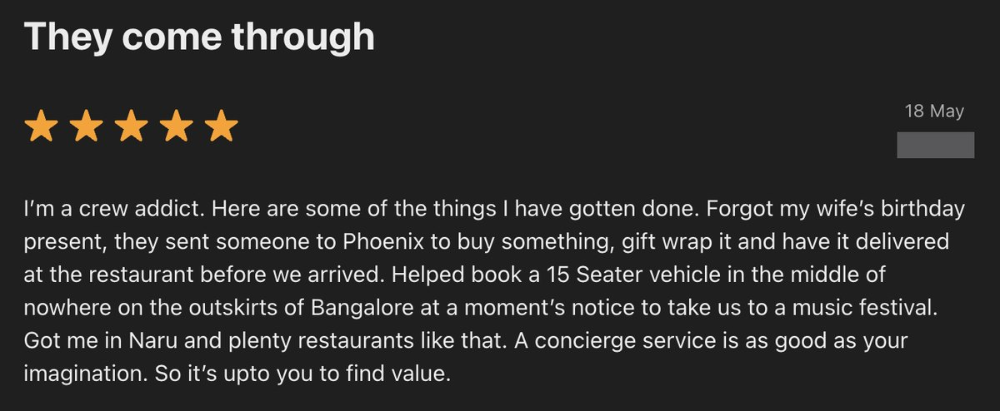
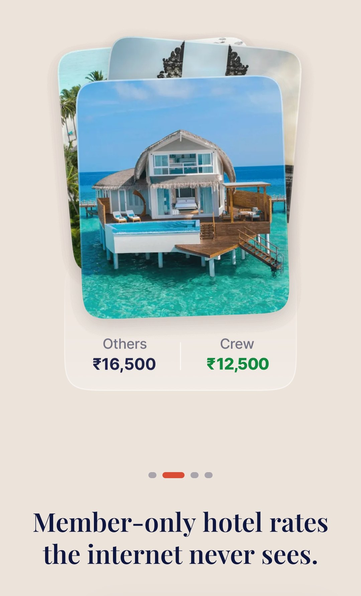
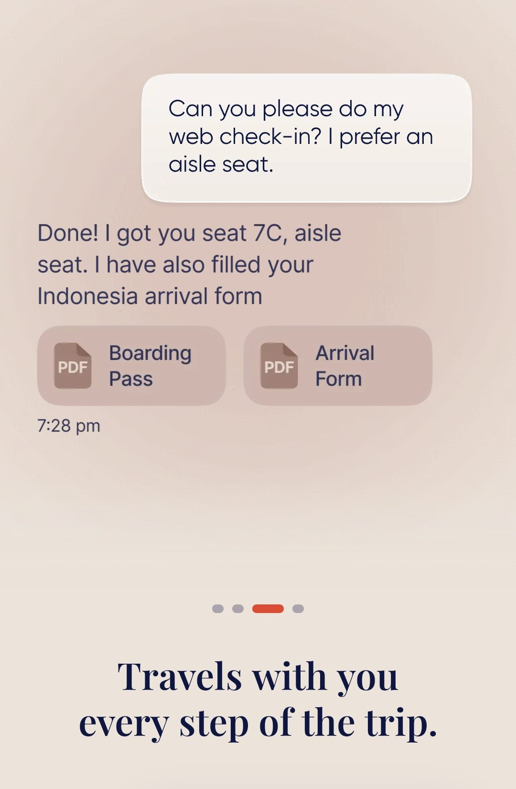
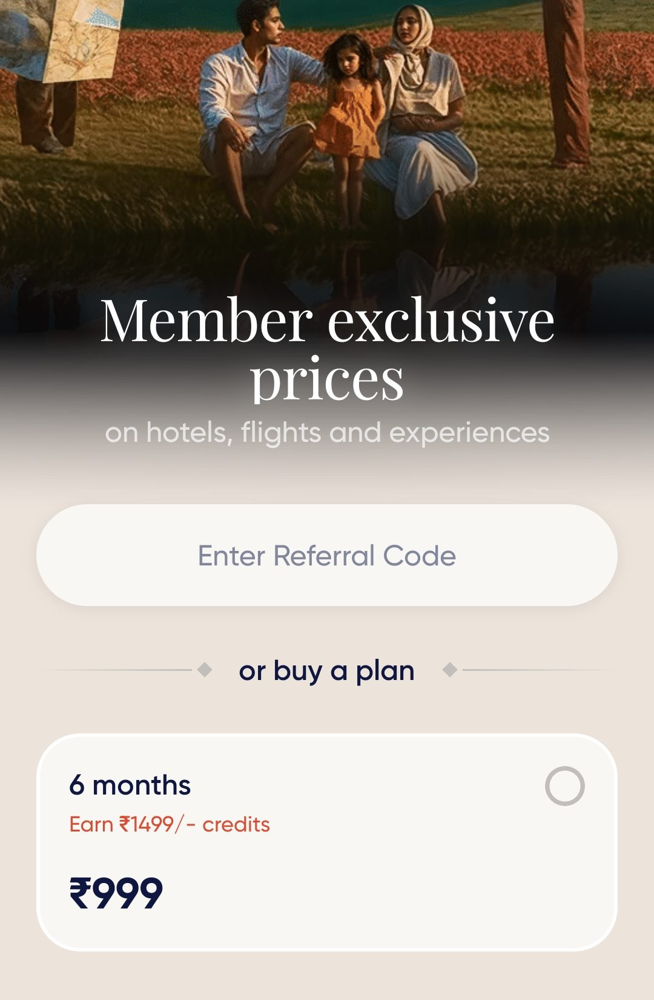
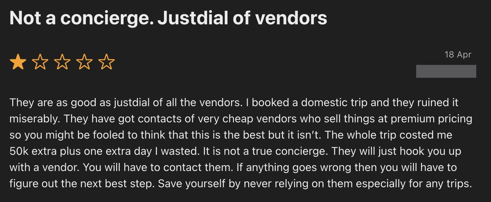
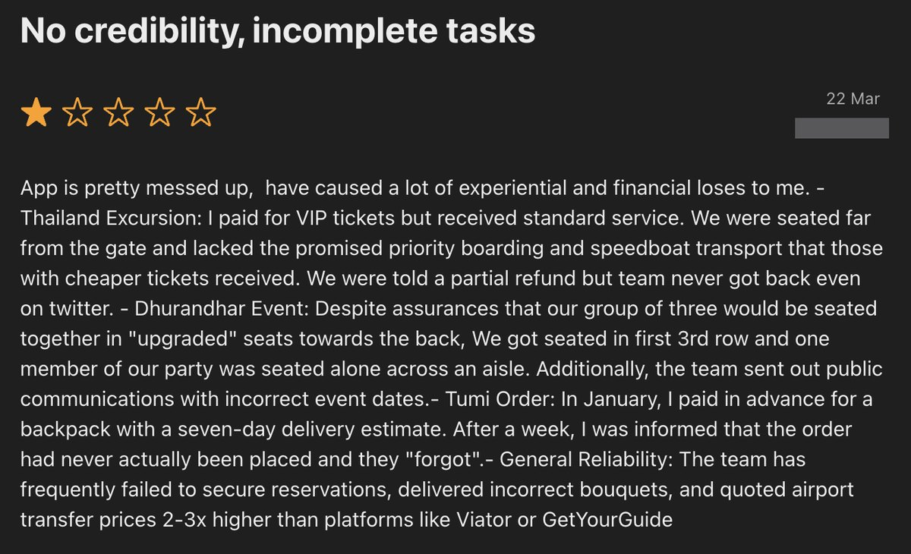

Handing over is the hard part
A product case study on CREW, Swiggy's travel concierge.

A concierge sells one thing: the freedom to stop thinking about something. You hand it over, and it's handled. You let go.
CREW, Swiggy's invite-only travel concierge for India's affluent, keeps doing the opposite. Its own users describe verifying its confirmations, chasing its replies, re-checking its bookings, and doing the research themselves anyway. Every one of those is the load being handed back.
And the thing you most need to know before you rely on it (can I actually let go with these people?) is the thing you can't find out until you already have: on a real trip, with real stakes, after paying to get in.
A note on method
This is an outside-in analysis, built only on CREW's public store listings, my own use of the app, and its public App Store and Play Store reviews from March to July 2026. Reviews are a skewed, self-selected sample: directional evidence, and not representative data.
What CREW is
CREW is a members-only travel app. It books the whole trip (flights, stays, visa and passport help, forex, airport transfers, ground transport, reservations, experiences) and adds a chat concierge that stays with you on the ground, "one message away" through the trip. Access is invite-only, or ₹999 for a six-month plan. The target customer is affluent: the app sells premium stays, member rates, and a personal-assistant experience.
That is the whole product. Everything below turns on one question: does it let the customer let go?
What an affluent traveller is actually buying
Not a discount. Someone who spends freely on travel is not switching apps to save four thousand rupees on a hotel, and does not stay for a coupon. What they are buying is the removal of doubt: the ability to say "handle it" and then not think about it again.
The scarce goods here are time, attention, and certainty.
This reframes money entirely. When an affluent customer complains about being overcharged, the grievance is rarely the rupees. A billing error is a signal: if they got this wrong, what else did they get wrong? The number is small; the doubt it plants is not. Money, in this segment, is a trust signal, not a price axis. Hold that distinction, because it decides which complaints matter and why.
So the product is doubt-removal. The rest of this piece asks how reliably CREW delivers it.
When it works, it's magic
It can be extraordinary. In one five-star review from May, a member describes forgetting a gift before a trip; CREW bought it, wrapped it, and delivered it, and separately arranged a fifteen-seater at a moment's notice. Another member, in June, credits it with airport cabs, tables at restaurants that don't take walk-ins, and a weekend getaway pulled together on short notice. The recurring note in the happy reviews is relief: someone else carried it, and it was handled.

This matters for two reasons. First, it proves the model is real. The concierge can remove doubt, and when it does the reaction is devotion rather than mere satisfaction. Second, it sets the correct diagnosis. CREW's problem is not that the idea is wrong. It is that the experience is inconsistent. That points to a fix built on reliability. It is why this is a case study and not a teardown.
What letting go looks like when it's built right
CREW is not inventing a category. A handful of players elsewhere have solved the same problem, and their solutions are specific enough to borrow.
Ten Lifestyle Group, which runs concierge for dozens of private banks, gives every top-tier member a single dedicated lifestyle manager: one named person who owns the relationship and carries the context. It also ties its service to hard retention and satisfaction numbers, so quality is measured, not asserted. Its technology is built to support that human, not replace them.
Velocity Black, an app-first, invite-only concierge now owned by Capital One, serving the same affluent traveller, does three things worth copying. It guarantees a response time. A member's request is answered within about a minute, any hour. It draws a clear line between machine and human: the AI drafts and researches, but a human owns the actual interaction and the judgment. And it deliberately prioritises depth over headcount, optimising for members who are highly engaged instead of for how many it can sign up.
American Express's Fine Hotels + Resorts program solves the hardest problem of all, the broken promise, with a single discipline. Its benefits are published with explicit certainty labels: some things are guaranteed (a 4pm checkout), others are clearly marked when available (a room upgrade). The member always knows what is promised versus what is conditional, so there is nothing to walk back later. Amex never says "included" unless it is.
One owner. A response guarantee. A clear line between AI and human. Promise only what's confirmed. That is what letting go looks like when it is engineered. Now the gap.
The gate: you can't test the let-go without first letting go
CREW shows you the promise before you buy. The onboarding is confident and specific. One screen compares a hotel at ₹16,500 elsewhere against ₹12,500 on CREW: "member-only hotel rates the internet never sees." Another offers a welcome gift knocking ₹500 off an exclusive rate. A third demonstrates the concierge in action: a member asks for a web check-in with an aisle seat, and CREW replies that it is done: seat 7C, boarding pass attached, arrival form already filled. Behind all of it sits the ₹999 plan, or an invite.



The promise, then, is visible. What is not visible is whether it is true for you, on your hotel, your date, your trip, when something goes wrong at 11pm in a city you don't know. And there is only one way to find that out: pay, book a real trip, and hand it over. The demo shows a flawless check-in; it cannot show you what happens the day the check-in fails.
This is the gate. The barrier is not the ₹999, which for this customer is a rounding error. The barrier is the trip. To learn whether you can let go with CREW, you have to let go with CREW, on something that matters, before any trust exists. You are asked to make the leap in order to find out whether the leap is safe.
The hand-back: every failure returns the load to you
Past the gate, the reviews split sharply: a wall of five stars and a wall of one star, with little in between. That shape is the story. The same product that delivers the wrapped gift also, repeatedly, hands the work back.

Read the one-star reviews as a single pattern and they are all the same event: a moment where the customer had to pick the load back up.
A member in April stops calling it a concierge at all. To him it is a directory that connects you to marked-up vendors and then leaves you to deal with them, a trip that cost him tens of thousands more than doing it himself. That is the work handed back. A member in March itemises four bookings where what was promised and what arrived were different things. VIP excursion tickets that came with standard service, while the cheaper tickets got the priority boarding his did not. "Upgraded" seats that turned out to be near the front, with one of his party alone across the aisle. A bag paid for in January that, a week past its delivery date, turned out never to have been ordered at all. Each of those was settled as far as he knew, right up until it wasn't, and that is what turns a confirmation into something you check rather than something you rely on. That is verification handed back. The same review notes the team sending out public communications with the wrong event dates, a detail nobody owned.

On the Play Store, a June reviewer says the recommendations read like generic material pulled off the internet instead of checked advice, so he ends up researching everything again himself, no better, he notes, than a chatbot. That is the judgment handed back. Another describes an airport transfer where the driver improvised a cheaper route to save a little money, nearly causing a missed flight; when he complained, he got an apology and nothing else. That is the whole point of a concierge, handled and on the ground, handed back at the worst possible moment.
None of these people are angry about money in the way it first appears. They are angry because they let go and the load came back. For a customer who is buying the letting-go itself, that is not a service slip. That is the promise the whole product rests on.
Why one hand-back is fatal here
An obvious objection: this is an early, invite-only product, and early products are inconsistent. True. Variance at this stage is normal.
But normal variance is not survivable for this product with this customer. A food-delivery app can be a coin flip on any given order and keep you, because the stake is a cold meal and the next order resets the relationship. A concierge cannot, because the thing being sold is trust, and trust is not an average. One confident confirmation that turns out to be wrong doesn't cost you that one booking. It retroactively poisons every other confirmation, because now you have to wonder about all of them. The affluent customer's response to a single betrayal is not to complain; it is to quietly stop delegating and go back to the travel agent or the assistant they already had.
So the two problems compound. You cannot test reliability without committing (the gate), and a single failure after you commit ends the relationship (the hand-back). CREW is asking for a leap of faith to reach a service that, today, punishes the leap often enough to matter.
The build: scaffolding that lets people let go
The fix begins before any feature, with what CREW sells. Its onboarding leads with price: rates the internet never sees. But price is a hold-on frame. It invites the customer to comparison-check, which is the exact supervising behaviour the product is supposed to eliminate. Selling savings to this segment trains them to audit you. Lead instead with the thing they are actually buying: it is handled, and it is handled reliably.
Then build the scaffolding that makes that true. Each fix is the inverse of a hand-back, and each is already proven elsewhere.
| Problem | Solution | Proven by |
|---|---|---|
| No one clearly owns your task | One named owner per mission, carrying context end-to-end | Ten |
| Confirmations can't be trusted | Say "confirmed" only when confirmed; label everything else as pending or conditional; never assert what isn't verified | Amex FHR |
| The work is still yours | Own the request end-to-end, or state openly when CREW is only brokering, so the customer knows what they hold | (the failure case) |
| You have to chase | A published response-time commitment and proactive follow-through | Velocity Black |
| You re-research their answers | A clear line: the model drafts, a human owns the judgment | Velocity Black |
| You can't test before committing | Once reliable, seed one high-signal mission a new member can let go of before the trip that matters | — |
These sequence deliberately, and reliability comes before reach. The cheap, structural fixes go first: a named owner, a response commitment, honest labelling of what's confirmed, and transparency about brokering. None of these needs an AI breakthrough; together they convert most of the one-star tail, the lost context and the walked-back promises and the chasing, into something the customer can rely on. Only then does it pay to formalise the AI-and-human line and to measure the result. And only after the service is consistent should CREW open the gate, repositioning on reliability and letting a new member feel one win before risking a whole trip. Opening the gate first only pours more people onto a coin flip.
This costs something. It means telling a growth-hungry company to install accountability and slow down, to look for a while like it is doing less. The defence is that for a trust product in this segment, scaling variance does not grow the moat. It burns it. Every leader worth copying here chose reliability first; none of them competes on being the cheapest.
Taking it to market
The fixes above cost money to run, and CREW's current model doesn't cover it. ₹999 for six months, around ₹165 a month, cannot fund a service where a single mistake ends the relationship. The product promises high-touch reliability; the price tags it as a cheap add-on. The two point in opposite directions, and the gap shows up as the failures the reviews describe.
So the order matters. Fix reliability first. Then, together, open the gate and change how the product is sold and priced. The second phase only works once the first is real: opening the gate onto a service that still hands the load back just introduces more people to the problem.
Four moves, each already proven by the players above.
| Move | What it means | Proven by |
|---|---|---|
| Distribute through trusted institutions, not app promotions | Bundle into premium card tiers (Amex, HDFC Infinia, CRED Reserve) and private-banking programmes, where the institution carries the cost as a retention perk. A warm introduction from a bank the customer already trusts is the "feel one win before you commit" wedge, solved at the channel, and it separates CREW from Swiggy's mass-market brand. | Ten (via HSBC, Coutts, RBC); Velocity Black (inside Capital One); Amex (concierge as a card benefit) |
| Price to fund the service; earn from the booking, not the markup | Replace the ₹999 plan with a real membership priced to fund reliability, plus a bank-subsidised tier for cardholders. Take a share of the high-value bookings arranged instead of marking up the customer's cab or errand, which removes the incentive behind the overcharging that reviews read as broken trust. | The leaders charge for certainty, not price |
| Lead with access, not errands | Make the first thing a new member feels the thing they can't do themselves, a booked-out table or a visa pre-check turned around in an hour, instead of a routine errand that ends trust before the trip. This doubles as the single high-signal mission, used as the way in. | Amex, Velocity Black |
| Machine researches, human owns the conversation | Software compiles the visa rules, scans inventory across partners, drafts the itinerary; one named person owns the conversation and checks every answer before it reaches the member. The reliability fixes, expressed as an operating model. | Velocity Black |
Together these do one thing: turn a single reliable mission into the trip, and a reliable trip into the whole travel stack. Reliability is what turns one request into share of wallet, and it only works in that order.
How you'd know it worked
There is a single metric that restates the whole thesis: the share of missions in which the customer never had to hold on: never had to verify a confirmation, chase a reply, re-check a booking, or negotiate a bill that was supposed to be settled. Satisfaction and attach rate both miss it. Call it the let-go rate.
And here is the test that could prove me wrong. Split members into two groups: the ones who actually lean on the concierge, and the ones who just book through the app and handle the rest themselves. If the concierge is really what makes CREW worth staying for, the first group should come back to book again far more often than the second. Run this only after reliability is fixed, because otherwise you are measuring a broken service instead of the idea. And if, even then, both groups come back at the same rate, the concierge was never the moat. The honest move at that point is to unbundle it, and let CREW compete as a very good travel-booking app with service attached.
That is the bet worth making, and the number that settles it. The prize is real: a concierge that reliably lets affluent travellers let go is a genuinely defensible thing, because almost no one does it consistently. CREW has already built the moments of magic. What is left is to make them dependable, which is the only thing its customers were ever paying for.